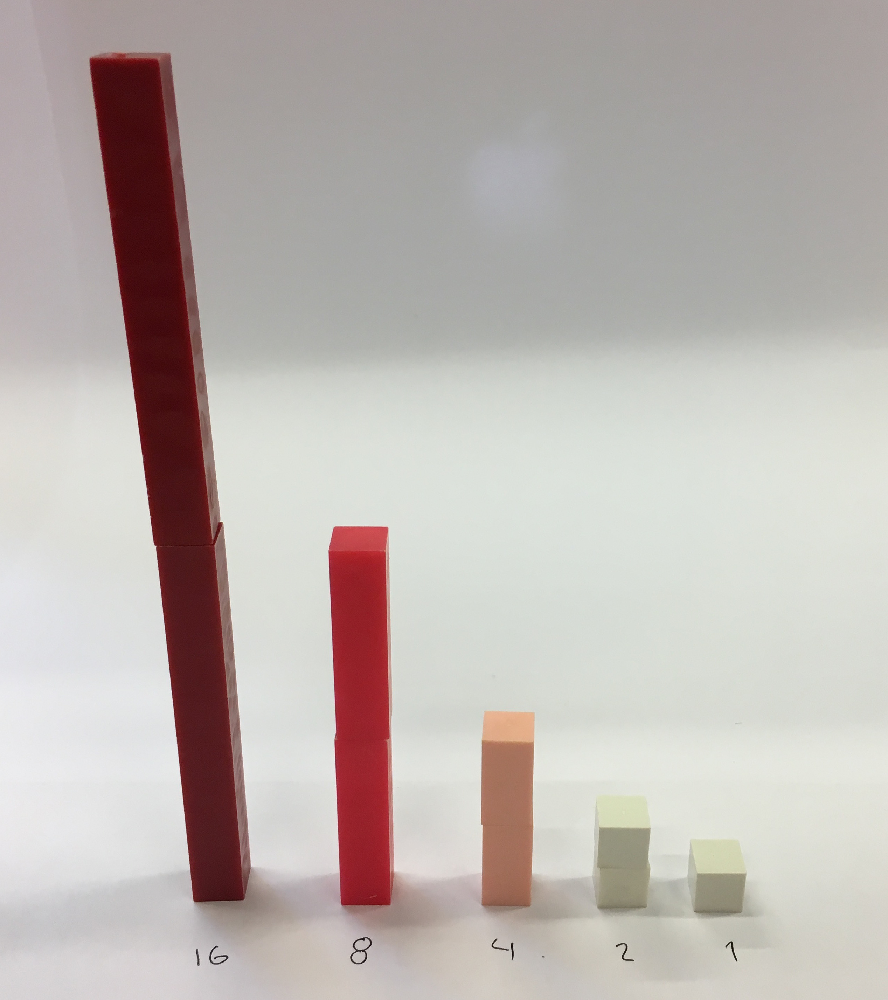
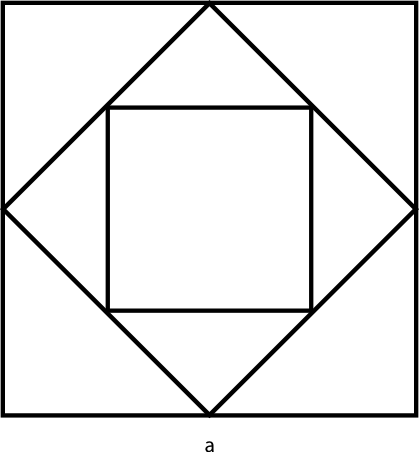

18. Geometrisk talföljd
På bilden ser du klossar som följder ett visst mönster. Vilket är mönstret? Hur kan vi beskriva talföljden på ett matematiskt sätt?

Lösning
Första stapeln består av 16 klossar, sedan har vi 8, 4, 2 och 1.
Vi märker att antalet halveras för varje steg, \(\dfrac{16}{2}=8, \dfrac{8}{2}=4, \dfrac{4}{2}=2\) och \(\dfrac{2}{2}=1\).
För att beskriva detta matematiskt så gör vi följande tabell
| OBS! | |
| \(16 \cdot \dfrac{1}{1} = 16\) | \((\dfrac{1}{2})^0 = 1\) |
| \(16 \cdot \dfrac{1}{2} = 8\) | \((\dfrac{1}{2})^1 = \dfrac{1}{2}\) |
| \(16 \cdot \dfrac{1}{4} = 4\) | \((\dfrac{1}{2})^2 = \dfrac{1}{4}\) |
| \(16 \cdot \dfrac{1}{8} = 2\) | \((\dfrac{1}{2})^3 = \dfrac{1}{8}\) |
| \(16 \cdot \dfrac{1}{16} = 1\) | \((\dfrac{1}{2})^4 = \dfrac{1}{16}\) |
Vi kan beskriva den som \(a_n = 16 \cdot (\dfrac{1}{2})^n\) där \(n=0, 1, 2, 3,\ldots\).
För en geometrisk talföljd gäller det att kvoten mellan två element är konstant.
Är talföljdena
- \(2, 4, 8, 16, 32, \ldots\)
- \(13, 9, 5, 1, -3, \ldots\)
- \(6, 3, \dfrac{6}{4}, \dfrac{6}{8}, \dfrac{6}{16}\)
geometriska?
Lösning
- Ja, eftersom \(\dfrac{4}{2}= 2\), \(\dfrac{8}{4}= 2\), \(\dfrac{16}{8}= 2\), osv.
- Nej, \(\dfrac{13}{9}\not= \dfrac{9}{5} \not=\dfrac{5}{1}\). Den är aritmetisk, minskar varje steg med \(-4\).
- Ja, eftersom \(\dfrac{3}{6} = \dfrac{1}{2}\), \(\dfrac{\frac{6}{4}}{3} = \dfrac{1}{2}\), osv.
Exempel 1 Visa att talföljden som bestäms av \(a_n = (\dfrac{1}{2})^{n-1}, n=1,2,3,\ldots\) är geometrisk.
Lösning
Vi får följande talföljd
\(a_1 = (\dfrac{1}{2})^{1-1}=1\)
\(a_2 =(\dfrac{1}{2})^{2-1}=\dfrac{1}{2}\)
\(a_3 =(\dfrac{1}{2})^{3-1}=\dfrac{1}{4}\)
\(a_4 =(\dfrac{1}{2})^{4-1}=\dfrac{1}{8}\).
Vi märker att förhållandet mellan värdeminskningen är konstant,
\(\dfrac{1}{2}/1 = \dfrac{1}{2}\),
\(\dfrac{1}{4}/\dfrac{1}{2} = \dfrac{1}{2}\)
\(\dfrac{1}{8}/\dfrac{1}{4} = \dfrac{1}{2}\).
Allmänt får vi att \((\dfrac{1}{2})^{(n+1)-1} / (\dfrac{1}{2})^{n-1} = \dfrac{1}{2^n} \cdot \dfrac{2^{n-1}}{1}=\dfrac{2^{n-1}}{2^n} = 2^{(n-1)-n} = 2^{-1} = \dfrac{1}{2}\). Kvoten mellan två element är \(\dfrac{1}{2}\).
Eftersom kvoten mellan två element är konstant talar vi om en geometrisk talföljd.
Exempel 2 Visa att talföljden \(a_n= 300, 60, 12, \ldots\) är geometrisk genom att allmänt bestämma kvoten. Bestäm även det 20:e elementet.
Lösning
Exempel 3 En geometrisk talföljd bestäms som \(10, \dfrac{1}{2}\cdot 10, \dfrac{1}{4}\cdot 10,\ldots\). Hur många element har ett värde som är större än 1?
Lösning
Vi har \(a_1=10\) och \(q=\dfrac{1}{2}\). Vi får olikheten
\(\begin{array}{rcl} a_n=10 \cdot (\frac{1}{2})^{n-1} & > & 1 \\ (\frac{1}{2})^{n-1} & > & \frac{1}{10} \\ n-1 & > & \log_{\frac{1}{2}} \frac{1}{10} \\ n & > & \log_{\frac{1}{2}} \frac{1}{10} +1 \approx 4,321\ldots\\ \end{array}\)
Alltså 4 element.
En geometrisk talföljd ser ut som
\(a_1 = a_1\)
\(a_2 = a_1\cdot q\)
\(a_3 = a_1\cdot q^2\)
\(a_4 = a_1\cdot q^3\)
\(a_n = a_1\cdot q^{n-1}\) där \(q\) är kvoten mellan två element.
För att en geometrisk talföljd gäller att kvoten mellan två element är konstant, \(\dfrac{a^{n+1}}{a_n}=q\).
Uppgifter
- Vad gör en talföljd till geometrisk?
Kvoten mellan två element är konstant. Det betyder att förhållandet mellan två element som är efter varandra har samma värde.
- Bestäm de 4 första elementen för den geometriska talföljden \(a_n=2^n\) då \(n=1,2,3,\ldots\).
\( a_1 = 2, a_2 = 4, a_3 = 8 \) och \( a_4=16 \).
- Visa att talföljden är geometrisk genom att bilda kvoten \(\dfrac{a^{n+1}}{a^n}\)
\(\dfrac{a^{n+1}}{a^n} = \dfrac{2^{n+1}}{2^n}=2^{n+1-n}=2^1=2\).
- Visa att talföljden är geometrisk genom att bilda kvoten \(\dfrac{a^{n+1}}{a^n}\)
- Bestäm de 4 första elementen för den geometriska talföljden \(a_n=(\dfrac{1}{3})^n\) då \(n=0,1,2,3,\ldots\).
\( a_0 = 1, a_1 = \dfrac{1}{3}, a_2 = \dfrac{1}{9} \) och \( a_3= \dfrac{1}{27} \).
- Visa att talföljden är geometrisk genom att bilda kvoten \(\dfrac{a^{n+1}}{a^n}\).
\(\dfrac{a^{n+1}}{a^n} = \dfrac{\frac{1}{3}^{n+1}}{\frac{1}{3}^n}=\frac{1}{3}^{n+1-n}=\frac{1}{3}^1=\frac{1}{3}\).
- Visa att talföljden är geometrisk genom att bilda kvoten \(\dfrac{a^{n+1}}{a^n}\).
- Bestäm det 7:e elementet för den geometriska talföljden \( 1000, 400, 160, \ldots \).
Kvoten mellan elementen är \( q_1 = \dfrac{400}{1000} = 0,4 \) och \( q_2 = \dfrac{160}{400} = 0,4 \).
Den allmänna termen är \( a_n = a_1 \cdot q^{n-1} = 1000 \cdot 0,4^{n-1} \).
Det 7:e elmentet är \( a_7 = 1000\cdot 0,4^{7-1} = 4,096 \).
- Ge exempel på en geometrisk talföljd som
- är växande och
- är avtagande.
Rita den på GeoGebra och se hur den beter sig. En kvot över 1 ger en växande, en kvot mellan 0 och 1 ger en avtagande. - Är talföljden som bestäms på följande sätt geometrisk? Motivera!
Bilda \(\dfrac{a_{n+1}}{a_n}\).
- \(a_n = \dfrac{1}{2}\cdot 2^n\)
Vi bildar \(\dfrac{a_{n+1}}{a_n} = \dfrac{\frac{1}{2}\cdot 2^{n+1}}{\frac{1}{2}\cdot 2^n} = 2^{n+1-n}=2\).
Den är geometrisk.
- \(a_n = n^2 \cdot n\)
OBS! \(n^2\cdot n = n^3\).
Vi bildar \(\dfrac{a_{n+1}}{a_n} = \dfrac{(n+1)^3}{n^3} = \dfrac{n^3+3n^2 +3n+1}{n^3}\) som vi inte kan förenkla.
Ingen kvot, talföljden är inte geometrisk.
- \(a_n=3\cdot (\dfrac{1}{2})^{n-1}\)
Vi får \(\dfrac{a_{n+1}}{a_n} = \dfrac{3\cdot \frac{1}{2}^{n+1-1}}{3\cdot \frac{1}{2}^{n+1}} = \dfrac{\frac{1}{2}^{n}}{\frac{1}{2}^{n+1}} = \dfrac{1}{2}^{n-(n+1)}=\dfrac{1}{2}^{-1}=2\).
Vi har en geometrisk talföljd.
- \(a_n = \dfrac{1}{2}\cdot 2^n\)
- Hur många element av den geometriska talföljden \(1,2,4,8,\ldots\) har ett värde mindre än 10 000?
\(a_1 = 1 = 2^0\)
\(a_2 = 2 = 2^1\)
\(a_3 = 4 = 2^2\)
\(a_4 = 8 = 2^3\)
\(a_n = 2^{n-1}\).
Olikheten är \(2^{n-1} < 10000\) som ger \(n < 14,29\).
- Om levnadskostnaderna för en familj ökar med 4,7 % varje år, hur många procent större är kostnaderna år 2027 än år 2020?
Levnadskostnaerna år 2020 betecknar vi med \( a \).
Vi har en geometrisk talföljd, eller procentuell förändring. Allänna termen är \( a_n = a \cdot 1,047^{n-1} \) där n = 1 läget år 2020.
Eller så kan vi skriva uttrycket som \( a \cdot 1,047^n \) då vi tänker 2021 som första element.
Vi får kostnaderna år 2027 till \( a \cdot 1,047^7 \).
Den procentuella skillnaden är \( \dfrac{a \cdot 1,047^7}{a} = 1,047^7 = 1,379198486 \).
Vi har en ökning om \( 1,379198486 - 1 = 0,379198486 \), alltså 37,9 %.
En person har en årslön på 38 000. Bestäm årslönen om 4 år då den höjs med a) 100 € och b) 4,0 % årligen. Hurdana talföljder har vi?
Aritmetisk talföljd Geometrisk talföljd 100 € per år 4 % varje år Aritmetisk talföljd Geometrisk talföljd 100 € per år 4 % varje år - Lönen efter 4 år då påöket är 100 € per år.
\(a_n = 38000 + n\cdot 100\).
\(a_4 = 38000 + 4 \cdot 100 = 38400\).
Alltså 38 400 €.
- Lönen efter 4 år då påöket är 4 % per år.
\(a_n = 38000(1,04)^n\)
\(a_4 = 38000(1,04)^4 = 44454,625\)
Alltså 44 455 €.
- Lönen efter 4 år då påöket är 100 € per år.
Genom att halvera sidan på en kvadrat och rita linjer mellan halveringspunkterna får vi en ny kvadrat i en större kvadrat. För kvadraternas areor får vi en geometrisk talföljd.
Hur mångte kvadraten har en area som är mindre än en miljontedel av den ursprungliga?

Hur långa blir sidorna i de mindre kvadraterna?
Vi får följande tabell:
\(\begin{array}{cll} \text{Kvadrat nummer} & \text{Sida} & \text{Area} \\ 1 & a & a^2 \\ 2 & a\cdot\dfrac{1}{2}\cdot\sqrt{2} & \vdots \\ 3 & (a\cdot\dfrac{1}{2}\cdot\sqrt{2})\cdot \dfrac{1}{2}\cdot\sqrt{2} = a(\dfrac{1}{2}\cdot\sqrt{2})^2 \\ 4 & (a\cdot\dfrac{1}{2}\cdot\sqrt{2}\cdot \dfrac{1}{2}\cdot\sqrt{2})\cdot \dfrac{1}{2}\cdot\sqrt{2} = a(\dfrac{1}{2}\cdot\sqrt{2})^3 \\ n & a(\dfrac{1}{2}\cdot\sqrt{2})^{n-1} & (a(\dfrac{1}{2}\cdot\sqrt{2})^{n-1})^2 \\ \end{array}\)
Vi får olikheten \((a(\dfrac{1}{2}\cdot\sqrt{2})^{n-1})^2 < \dfrac{1}{1000000}\cdot a^2\) som har lösningen \(n>20,93\).
Den 21:a kvadraten uppfyller villkoret.